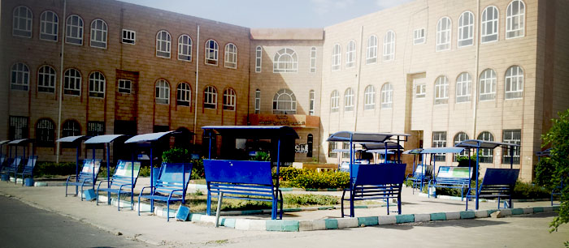
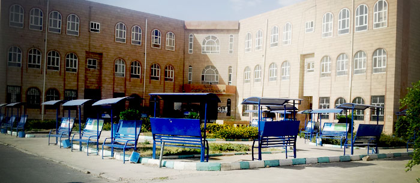

College of Computer Science & Information Technology


 

نشأة الكلية وتطورها
إن التطور المتسارع في مجال الحاسوب و تكنولوجيا المعلومات أدى الى إحداث تغيرات هامة في شتى مجالات الحياة الاجتماعية والاقتصادية والتقنية إلى درجة كبيرة وبرزت أهمية أن تواكب المؤسسات الأكاديمية وفي مقدمتها جامعة صنعاء -الجامعة الأعرق في الجمهورية اليمنية-التطورات في مجال الحاسوب وتكنولوجيا المعلومات من خلال إستحداث التخصصات العلمية التي انبثقت عن هذا التطور وبما يلبي الطلب الهائل لهذه التخصصات محليا واقليميا.فقد صدر قرار رئيس الجامعة بإنشاء "كلية الحاسوب وتكنولوجيا المعلومات" في العاام 2007/2008م،وكذا قرار المجلس الاعلى للجامعات.
تقدم برامج البكالوريوس في (نظم المعلومات، تكنولوجيا المعلومات وعلوم الحاسوب) وبرنامج الدراسات العليا في علوم الحاسوب.
يتبع الكلية فرع لأكاديمية سيسكولتقدم دورات في الشبكات وتكنولوجيا المعلومات، وأيضا مركز الحاسب الاَلى الذي يقدم دبلوم نظم المعلومات وعدداً من الدورات والاستشارات للمجتمع ، لكي تتمكن الكلية من تحقيق أهدافها وتقديم خدمة تعليمية متميزة ، ورفد سوق العمل اليمنية والإقليمية بمخرجات مدربة ومؤهلة تأهيلا جيدا.وكما تسعى الكلية مستقبلاً لفتح برنامج تكنولوجيا المعلومات لأشخاص ذوي الإعاقة السمعيةلاستيعابهم في المجتمع.
رؤية الكلية
"أن تكون الكلية متميزة محليا واقليميا في مجال الحاسوب وتكنولوجيا المعلومات."
رسالة الكلية
" تقديم تعليم أكاديمي متميز من خلال برامج أكاديمية وفقا للمعاير العالمية وتشجيع البحث العلمي بما يخدم المجتمع ويلبي متطلبات سوق العمل. ".
أهداف الكلية
الدرجات العلمية التي تمنحها الكلية
تمنح الكلية الدرجات العلمية التالية :
متطلبات القبول